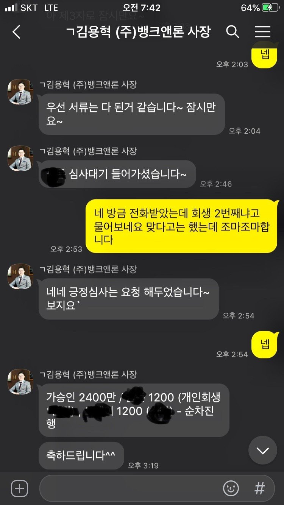

[개인회생자대출] 재회생 기대출과다 2400만원 대출 성공!!

재직형태 : 직장인
재직기간 : 7년
사대보험 가입유무 : 가입
소득 : 연 4800만
기대출 : 저축은행 담보대출 7500만 대부업 2100만
특이사항 : 재회생 49회차 0.99 미납 80만원
필요자금 : 200만원 + 회생변제금 미납분
상황이 많이 좋지 않습니다. 개인회생 재회생 상태이며 미납분도 있었고 기대출도 많이 잡혀있는 상태입니다.
급하게 200만원 정도가 필요해서 김용혁 사장님께 바로 연락을 드렸습니다.
결과는 대부업 상환조건으로 두군데 업체 연계하여 회생변제금 납부와 추가 필요자금까지 총 2400만원 대출 성공했습니다. 진행시간도 굉장히 빨랐습니다. 사실 스스로는 힘들것이라 예상했는데 이번에도 김용혁 사장님이 큰 도움을 주셔서 위기를 넘길수 있었네요. 뱅크앤론과 김용혁 사장님께 다시한번 감사드립니다